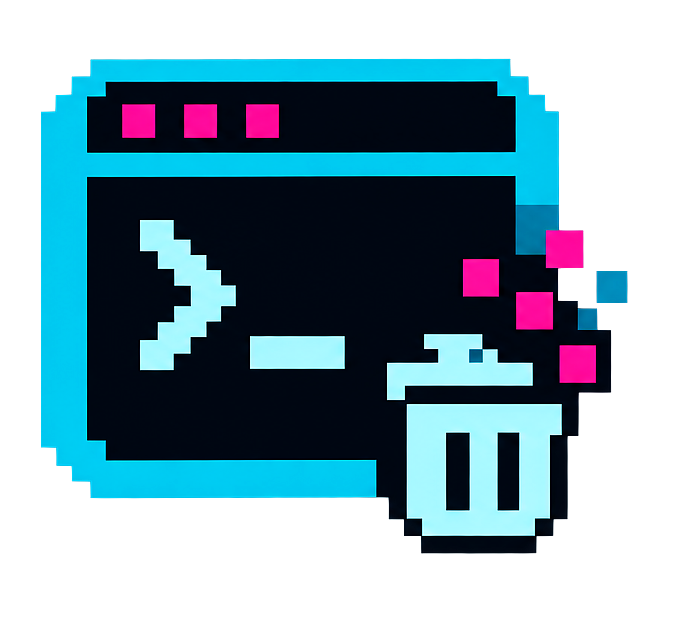
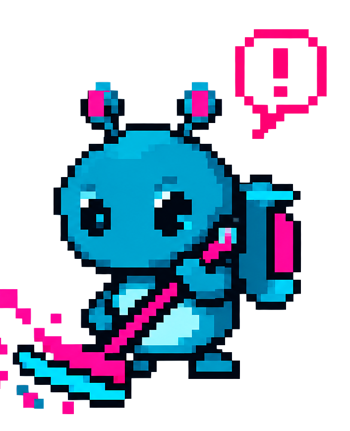

Watch what your
AI agents spawn.
Kill what they leave behind.
A session dies mid vitest. Its workers get re-parented to launchd,
vanish from your tmux tree, and quietly eat your RAM. aimon sees them, warns you before
memory pressure goes critical, and reaps the orphans.
cargo install --git https://github.com/CarlosDanielDev/aimon


the usual crime scene
the orphan
A coding agent dies or gets interrupted mid-run. Its test runners, MCP servers and build workers keep running — re-parented to launchd, invisible in tmux.
the cover-up
Activity Monitor blames iTerm2. Your fan spins. The swap file grows. Nobody knows which process is the guilty one.
the guardian
aimon groups every process by agent, marks the orphans, warns before pressure goes critical, and kills the guilty tree — TERM, then KILL, always logged.
features
agent-aware tree
Detects Claude Code, Codex, Gemini CLI, Aider, OpenCode, cursor-agent, Amp, Goose, Crush, Qwen, Copilot and Droid — in tmux or outside it — and groups every child under its agent.
auto-kill policy
Orphaned tool workers die after a grace period. Under critical memory pressure, the heaviest target goes first. Protected processes are refused in a single funnel — shells and editors are never touched.
confirmed kills
Every kill path opens the same popup: rows arrive pre-marked, space toggles, enter fires, esc cancels. The cursor follows its process when the list re-sorts — it never kills the row that moved under it.
receipts
Kills are SIGTERM, then SIGKILL 2 s later. Every kill sends
a native notification and lands in ~/.local/state/aimon/kills.log.
cross-platform
macOS kernel pressure level, Linux PSI, Windows fallback. Static musl binaries, universal macOS, x86_64 Windows — all attached to every release.
tiny
~600 KB binary, ~6 MB RSS, ~0.1% CPU idle. Samples 2.5× slower when your terminal loses focus.
keys & flags
| key | action |
|---|---|
| ↑↓ / jk | navigate |
| x | kill selected — opens the confirm popup |
| X | kill the group's dev processes |
| p | panic: every pre-marked target, confirmed |
| a · t · q | toggle auto · theme (neon/matrix) · quit |
Flags: --rss-limit-mb N (panic threshold, 500) ·
--orphan-grace-s N (60) · --tick-ms N (2000) ·
--daemon (headless) · --no-auto. NO_COLOR is honored.